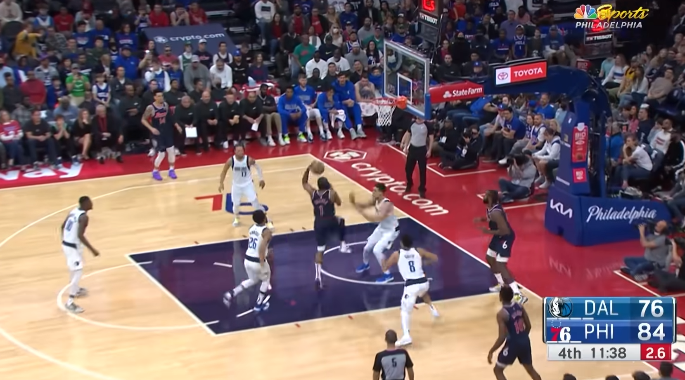
Behind-the-Back Assist
Harden used a behind-the-back pass to break down the defense and create an open scoring chance.
Watch Clip (0:09)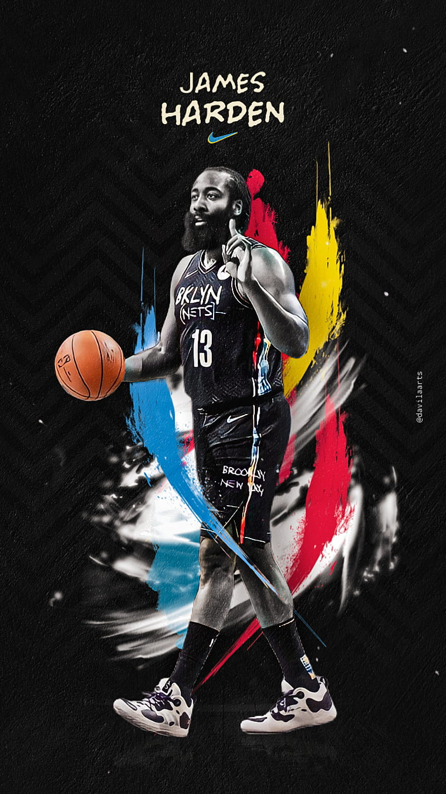
Playmaking
This page brings together a selected set of James Harden’s most creative passing moments, from behind-the-back assists and full-court outlet passes to quick reads under pressure.
Click any card to bring it into focus at the center of the screen and explore the play more closely.
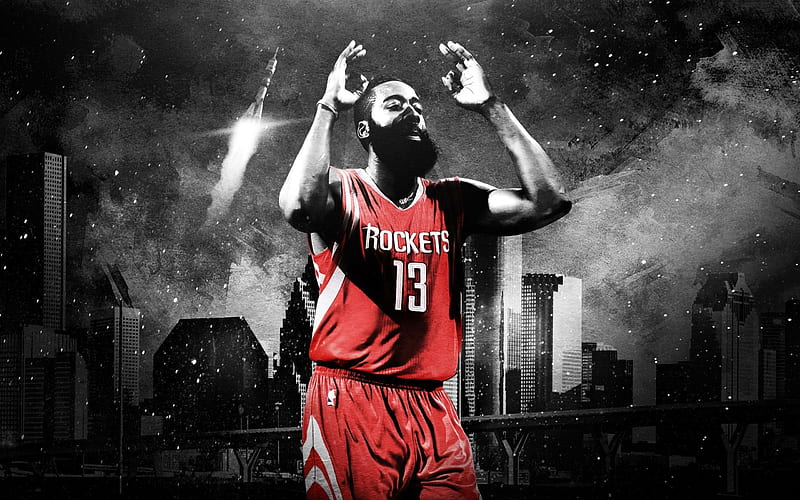

Harden used a behind-the-back pass to break down the defense and create an open scoring chance.
Watch Clip (0:09)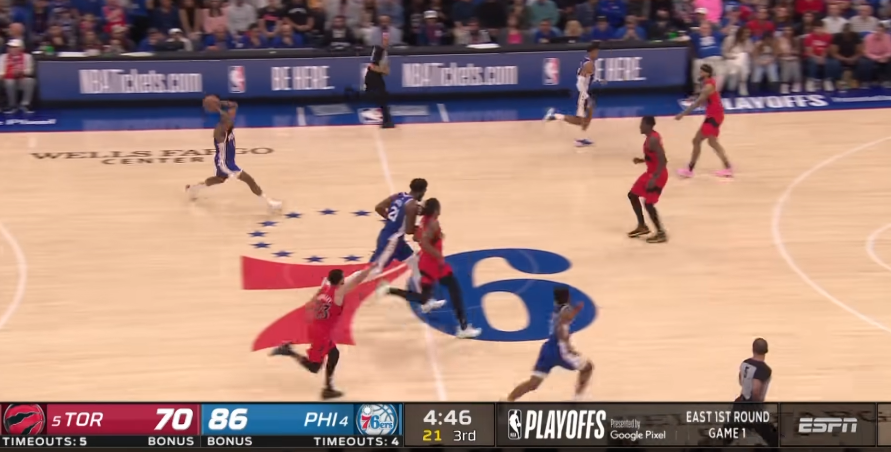
A long bounce pass across the floor showed Harden’s accuracy, timing, and transition awareness.
Watch Clip (0:17)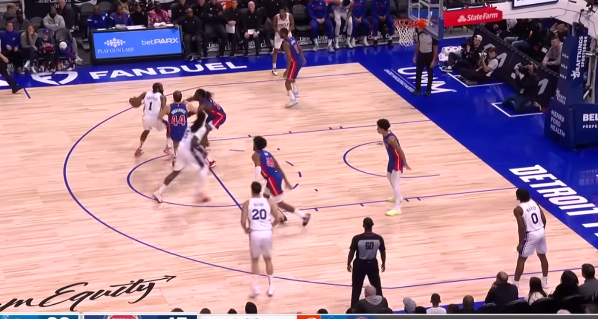
Under pressure from two defenders, Harden threaded the ball through a tight gap with perfect control.
Watch Clip (1:13)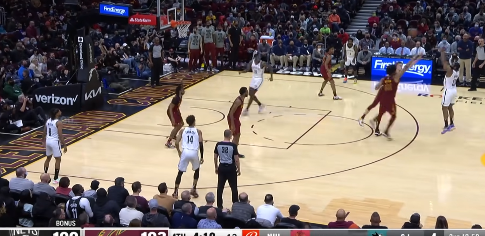
A convincing shot fake drew the defense inward before Harden quickly turned the move into an assist.
Watch Clip (1:51)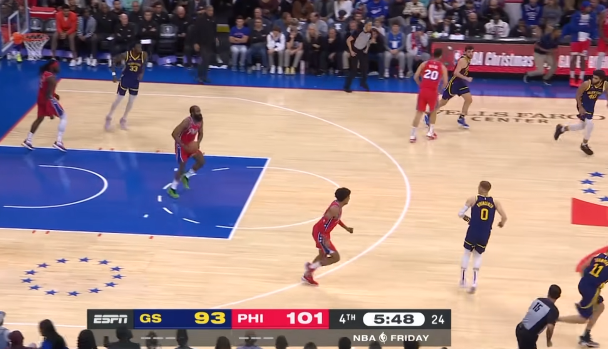
Harden launched a long pinpoint pass that felt more like a quarterback throw than a standard assist.
Watch Clip (3:37)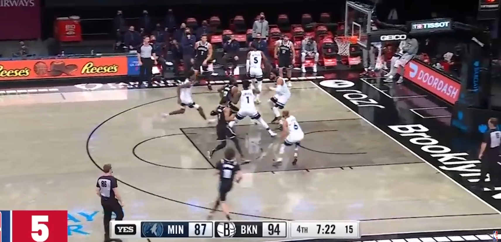
Driving near the baseline, Harden slipped a creative behind-the-back pass into the paint.
Watch Clip (1:41)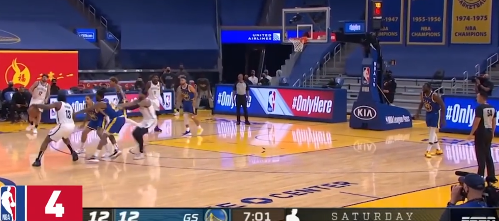
Even while trapped by two defenders, Harden managed to stay balanced and find the right outlet.
Watch Clip (1:51)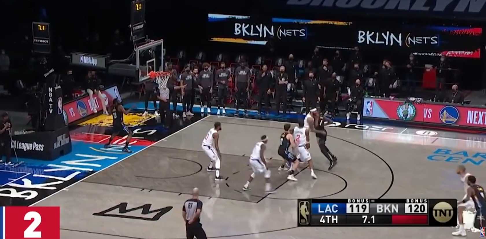
Right before the end of the sequence, Harden fired a long pass from the baseline to start an instant chance.
Watch Clip (2:31)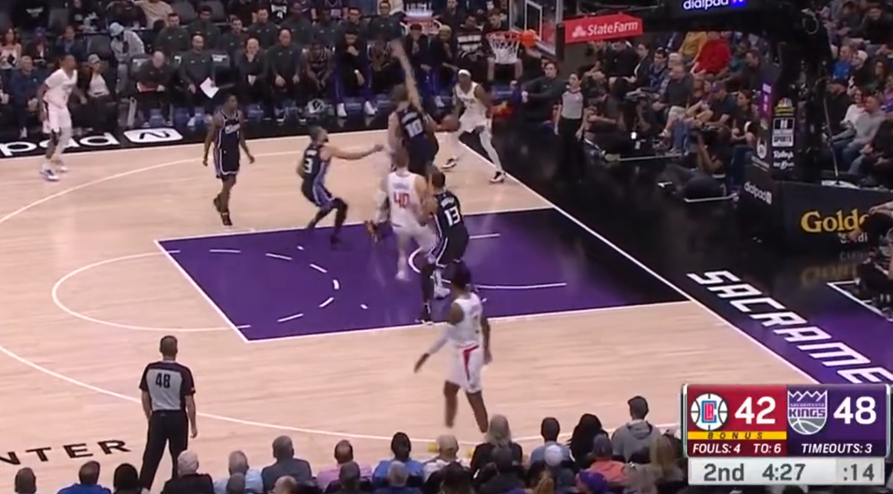
While attacking the rim, Harden turned a scoring move into a surprise assist with a pass behind his body.
Watch Clip (1:48)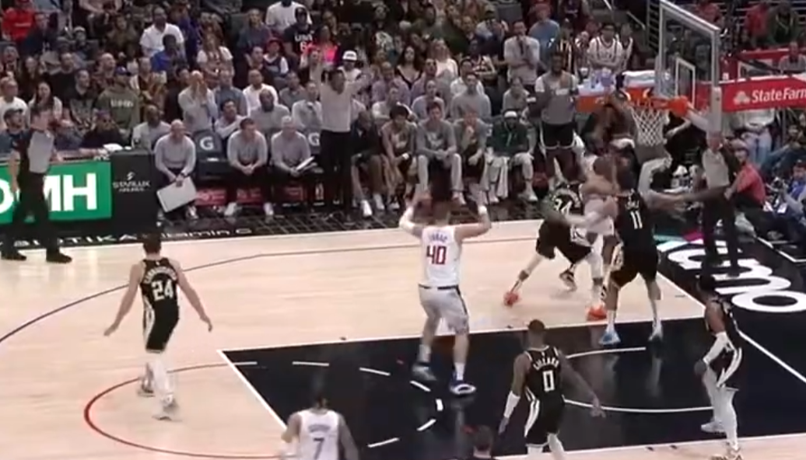
With defenders collapsing around him, Harden still found a teammate under pressure without telegraphing the play.
Watch Clip (3:55)